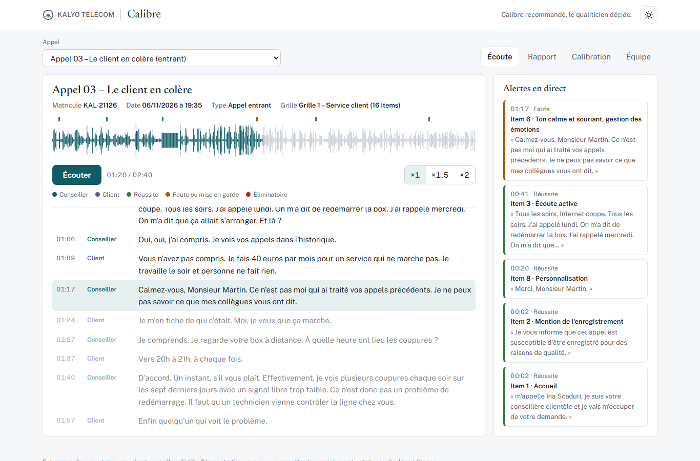

Calibre note les appels comme un qualiticien.
Calibre écoute un appel de centre de relation client, le transcrit en séparant le conseiller du client, puis le note avec la grille qualité d'un qualiticien.
Chaque note s'appuie sur une preuve : la phrase exacte, citée avec son horodatage, que le code retrouve dans la transcription avant de l'accepter.
Calibre signale les éliminatoires et les mises en garde, écrit un coaching et propose une action, mais Calibre recommande, le qualiticien décide.
Un rapport complet La calibration IA / qualiticien La vue d'équipe Le code source
94,8 %
des items notés comme le qualiticien
12 / 13
appels au bon niveau
12 / 13
appels avec la bonne action
3 / 3
appels graves détectés

L'écoute : la transcription suit l'audio, les alertes apparaissent au moment exact où la phrase est dite, et un clic sur une alerte ramène l'audio à ce moment.